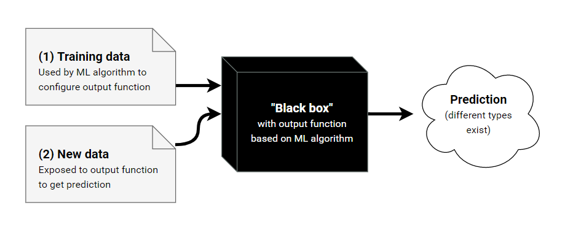

Lecture 2
Linear Regression Models

Cat Hearts example:
Experience E
- The dataset consists of n data points
- ((x1,y1),...,(xn,yn)∈Rd×R)
- xi∈Rd is the "input" for the ith data point as a feature vector with d elements, d being the # of dimensions in the feature space, in this case 1.
- yi∈R is the "output" for the ith data point, in this case the weight of the corresponding cat heart.
Learning Task, T
- In this example, our task is: Linear Regression
- Find a "model", i.e. a function:
- f:Rd→R
- s.t. our future observations produce output "close to" the true output.
Linear Regression Model
- A linear regression model has the form:
- f(x)=(∑i=1dwi⋅xi)+b
- where:
- x∈Rd is the input vector (feature)
- w∈Rd is the weight vector (parameters)
- b∈R is a bias (parameter)
- f(x)∈R is the predicted output
- In our cat example we have:
- d=1 as "body weight" is our only feature
- b=0 as from intuition we expect a cat of 0 weight to have a heart of 0 weight.
- Our model has one parameter: w
- Want a function, J(w) which quantifies the error in the predictions for a given parameter w

- The following empirical loss function, J takes into account the errors ∀n data points.
- J(w)=(1/2N)∑i=1N(yi−wxi)2
- where the summation term is squared so that:
- we ignore the sign
- we penalise large errors more
- To find the optimum weight, solve:
- δwδJ = 0